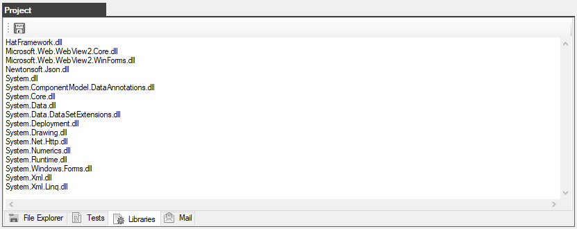
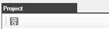

The Project window - the Library tab
List of plug-in libraries required to perform autotests

The toolbar contains the following buttons:

Created with the Personal Edition of HelpNDoc: Free help authoring environment